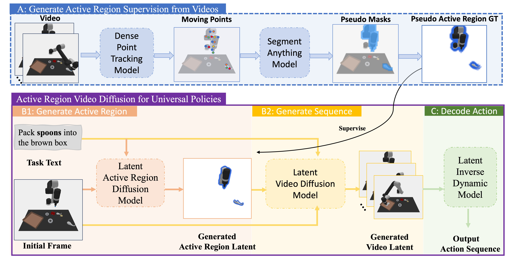

ARDuP: Active Region Video Diffusion for Universal Policies
中文精读报告：这篇论文把视频生成用于通用机器人策略学习，但它的关键不是“生成完整视频越真越好”，而是先显式生成任务相关的主动区域，让视频规划器和动作解码器更关注真正会被交互的物体/区域。
目录
1. 论文速览
| 论文要解决什么 | 已有 video-as-planner 方法把文本目标和初始图像生成未来帧，再由 inverse dynamics 解码动作。但这些模型通常把所有像素同等对待，容易关注错误物体，甚至通过“改颜色”等视觉捷径降低生成损失却生成错误计划。ARDuP 要解决的是：如何让视频规划器更稳定地关注任务真正需要交互的区域，并把这种关注转化为更高的机器人任务成功率。 |
|---|---|
| 作者的方法抓手 | 引入 active region 作为显式条件。训练时用 Co-Tracker 从演示视频中找运动点，再用 SAM 生成 pseudo active region mask，无需人工标注；推理时用 latent active region diffusion 根据初始帧和语言命令预测主动区域，再将该区域作为条件输入 latent video diffusion planner，最后用 latent inverse dynamics 直接从生成 latent 序列解码动作。 |
| 最重要的结果 | 在 CLIPort 三个 unseen tasks 上，ARDuP 相比 UniPi* 分别提升 Place Bowl +21.3%、Pack Object +17.2%、Pack Pair +15.7%。主动区域质量越高，成功率越高；若测试时使用 GT active region，提升可到 +16.6%、+24.4%、+24.8%。在 BridgeData v2 上，ARDuP 生成的视频计划定性上更能选择正确物体和放置位置。 |
| 阅读时要注意的点 | 这篇不是直接解决真实机器人闭环控制，而是一个离线数据驱动的视频规划 + 动作解码框架。读的时候要区分三件事：active region pseudo-label 如何来、active region 如何进入 latent diffusion、任务成功率提升到底来自主动区域条件还是 latent inverse dynamics 的设计。 |

2. 背景与问题设定
从 MDP 到 UPDP
传统 MDP 需要定义状态、动作、奖励和环境动力学。对于跨任务、跨环境机器人策略，这些定义很难统一。UniPi 引入 Unified Predictive Decision Process (UPDP)：把状态空间换成视频帧，把目标换成语言文本，把规划换成条件视频生成。
UPDP 被定义为 \(\mathcal{G}=(\mathcal{X},\mathcal{C},H,\rho)\)。其中 \(\mathcal{X}\) 是 RGB 帧空间，\(\mathcal{C}\) 是任务文本集合，\(H\) 是规划长度，\(\rho(\cdot|x_0,c)\) 是根据初始帧 \(x_0\) 和任务文本 \(c\) 生成未来 \(H\) 帧的视频生成器。动作预测算法 \(\mu(\cdot|\{x_h\}_{h=0}^{H},c)\) 再从生成视频中预测动作序列。
UPDP 的问题
UPDP 的动作质量依赖生成帧质量。但生成模型若把所有像素同等优化，会在机器人任务中产生一种很危险的错误：只要图像看起来“接近目标”，它未必真的交互了正确物体。例如模型可以先抓错物体，再在后续帧里把物体颜色改成文本描述中的颜色。
3. 方法细节
3.1 LUPDP-AR 形式化
作者把 UPDP 改成 Latent Unified Predictive Decision Process conditioned on Active Region (LUPDP-AR)：
$$\hat{\mathcal{G}}=(\hat{\mathcal{X}},\mathcal{C},\hat{\mathcal{O}},H,\phi)$$
\(\hat{\mathcal{X}}\) 是 RGB 帧 latent 空间，\(\hat{\mathcal{O}}\) 是 active region latent 空间。Stable Diffusion 风格的 encoder \(\mathcal{E}\) 把 RGB frame 和 active region frame 映射到 latent。视频生成器从原来的 \(\rho(\cdot|x_0,c)\) 改成：
$$\phi(\cdot|\hat{x}_0,c,\hat{o})$$
也就是不仅看初始帧和文本，还看 active region latent \(\hat{o}\)。同时定义 active region generator：
$$\psi(\hat{o}|\hat{x}_0,c): \hat{\mathcal{X}}\times\mathcal{C}\rightarrow\hat{\mathcal{O}}$$
最终动作预测也在 latent 序列上进行：\(\pi(\cdot|\{\hat{x}_h\}_{h=0}^{H},c)\rightarrow \Delta(\mathcal{A}^{H})\)。这避免了必须把每个 latent 解码回 RGB 再做 inverse dynamics。

3.2 从视频自动构造 active region supervision
训练时没有人工 active region 标注。作者用演示视频 \(\mathbf{V}=\{x_h\}_{h=0}^{H}\) 自动生成 pseudo mask：
- 用 Co-Tracker 在初始帧上放置 \(M\times M\) 网格点，并跟踪所有点到后续帧，得到轨迹集合 \(\mathcal{P}=\mathcal{F}_p(\mathbf{V})\)。
- 对每条点轨迹计算相邻帧移动量 \(\Delta \mathbf{p}_h=\|\mathbf{p}_h-\mathbf{p}_{h-1}\|_2\)。
- 计算平均移动量 \(\Delta\bar{\mathbf{p}}=\frac{1}{H}\sum_{h=1}^{H}\Delta\mathbf{p}_h\)。
- 筛选移动点 \(\mathcal{P}_m=\{\mathbf{p}\in\mathcal{P}|\Delta\bar{\mathbf{p}}>\tau\}\)。
- 把这些点在初始帧的位置作为 prompt 输入 SAM，得到 active region mask \(\mathbf{M}\)。
为了形成 active region frame，作者把 mask 内保留原图，mask 外置白：
$$o=x_0\circ \mathbf{M}+x_b\circ(1-\mathbf{M})$$
再用 encoder \(\mathcal{E}\) 得到 \(\hat{o}\)。

3.3 Latent active region diffusion
推理时没有未来视频，不能再用 Co-Tracker 从整段视频抽主动区域。因此训练一个条件 latent diffusion model \(\psi(\hat{o}|\hat{x}_0,c;\theta_\psi)\)，输入初始帧 latent 和任务文本，输出 active region latent。作者强调二者缺一不可：没有图像不知道物体位置，没有文本不知道任务要交互哪个物体。
3.4 Active-region-conditioned latent video planner
视频规划器 \(\phi(\cdot|\hat{x}_0,c,\hat{o};\theta_\phi)\) 生成未来 latent 序列。实现上，作者把 active region latent 与每一帧 latent 拼接，也与初始帧 latent 拼接，使 denoising 过程始终被“应该关注哪里”约束。可视化时可以用 decoder \(\mathcal{R}\) 还原 RGB，但动作解码并不依赖 RGB 解码。

3.5 Latent inverse dynamics 与执行
给定相邻 generated frame latents \(\hat{x}_h,\hat{x}_{h+1}\)，latent inverse dynamics module 预测动作 \(a_h\)。它由带 skip connection 的卷积层加线性层组成，输出 7 维 manipulation action。执行时从 \(x_0,c\) 开始，先生成 \(\hat{o}\)，再生成 \(H=6\) 步 latent 序列，最后一次性解码 \(H\) 个动作并 open-loop 执行。
4. 实验与结果
4.1 实现设置
- Co-Tracker 网格大小 \(M=60\)，移动阈值 \(\tau=2\)。
- 对 pseudo mask 做 connected component labeling，保留被操作物体，排除机械臂区域。
- 图像 resize 到 \(512\times512\)，VAE encoder 输出 \(128\times128\times4\) latent。
- active region generator 使用 T5-XXL 文本编码和改造 UNet。
- latent video diffusion 使用类似 UNet，并加入 temporal modules，生成 \(H=6\) 帧 latent。
- diffusion 和 inverse dynamics 从头训练，使用 8 张 A100；diffusion 学习率 \(3\times10^{-4}\)，batch 96；inverse dynamics 学习率 \(5\times10^{-4}\)，batch 3072。
4.2 CLIPort 多环境迁移
CLIPort 是基于 Ravens 的语言条件机器人操作模拟基准。作者在 11 个任务、110k demos 上训练，在 3 个 unseen tasks 上测试，沿用 UniPi 的 multi-environment transfer 设置。
| Model | Place Bowl | Pack Object | Pack Pair |
|---|---|---|---|
| State + Transformer BC | 9.8 | 21.7 | 1.3 |
| Image + Transformer BC | 5.3 | 5.7 | 7.8 |
| Image + TT | 4.9 | 19.8 | 2.3 |
| Diffuser | 14.8 | 15.9 | 10.5 |
| UniPi* | 65.4 | 51.8 | 30.9 |
| ARDuP | 86.7 (+21.3) | 69.0 (+17.2) | 46.6 (+15.7) |
这个结果说明，在相同视频规划范式下，显式 active region 条件对 unseen task 成功率有明显帮助。
4.3 BridgeData v2 真实数据迁移
BridgeData v2 包含 60,096 条真实机器人轨迹、自然语言指令、24 个环境。作者使用 95% 数据训练，其余评估。论文主要给出定性结果：ARDuP 能在复杂真实场景中选择正确物体并放到正确位置，而 UniPi* 更容易选错物体或放错位置。

4.4 消融：active region 质量
| AR 训练 | AR 测试 | Planner | Place Bowl | Pack Object | Pack Pair |
|---|---|---|---|---|---|
| - | - | w/o Active Region | 83.4 | 67.7 | 38.0 |
| Unsupervised | Predicted | +Active Region | 86.7 (+3.3) | 69.0 (+1.3) | 46.6 (+8.6) |
| Supervised | Predicted | +Active Region | 93.3 (+9.9) | 79.6 (+11.9) | 51.7 (+13.7) |
| - | GT | +Active Region | 100.0 (+16.6) | 92.1 (+24.4) | 62.8 (+24.8) |
这张表非常关键：active region 不是只在定性图上好看，它的质量和最终任务成功率呈正相关。预测主动区域越准，任务越容易成功。
4.5 消融：task loss
作者提出 task loss 来衡量控制任务中的视频生成质量：把 generated video latents 输入预训练 latent inverse dynamics，解码动作，再计算动作和 GT action 的 L1 error。带 active region 的模型在 CLIPort test set 上 task loss 明显更低，说明生成视频不仅视觉上更合理，也更符合动作解码器需要。

5. 实现与图表要点
源码结构
arXiv 源码中 `root.tex` 是 IEEE 模板样例，实际论文主文件为 `iros24_vid_main.tex`，正文在 `data/` 下。源码未提供单独 appendix。图像资源包括 `teaser.jpg`、`overview.jpg`、`vis_cliport.jpg`、`bridge_vis.jpg`、`pseudo_bridge.jpg`、`ablation_active.pdf` 等。
为什么要在 latent 空间做
作者把视频规划和动作解码都尽量放在 latent 空间：一方面减少 RGB 视频生成计算成本，另一方面让 inverse dynamics 直接消费生成器内部表示，避免先解码 RGB 再重新编码/感知。可视化只是为了人看，控制本身可以不需要 RGB 解码。
active region 的两个角色
- 训练监督：通过 Co-Tracker + SAM 从真实演示视频自动抽出 pseudo masks，避免人工标注。
- 推理条件：通过 \(\psi(\hat{o}|\hat{x}_0,c)\) 预测任务相关区域，作为 \(\phi\) 的条件，约束未来视频 latent 的生成方向。
6. 复现与实现要点
最小复现路径
- 准备带语言指令、图像序列、动作序列的数据集，例如 CLIPort 或 BridgeData v2。
- 对训练视频运行 Co-Tracker，得到初始帧网格点的全时序轨迹。
- 按平均位移阈值筛选 moving points，并用 SAM 生成 pseudo active region mask。
- 将初始帧、active region frame 编码到 Stable Diffusion VAE latent。
- 训练 active region diffusion \(\psi\)，输入 \(\hat{x}_0,c\)，输出 \(\hat{o}\)。
- 训练 latent video diffusion \(\phi\)，输入 \(\hat{x}_0,c,\hat{o}\)，输出未来 latent 序列。
- 训练 latent inverse dynamics \(\pi\)，输入相邻 latent，输出 7 维动作。
- 推理时 open-loop 生成 \(H=6\) 个动作并执行。
容易踩坑的地方
- Co-Tracker 会把机械臂运动也当作 active，需要 connected component 过滤，保留被操作物体。
- active region pseudo-label 的噪声会传递到 diffusion 训练；论文自己也指出 noisy label learning 可能是未来改进方向。
- UniPi* 是作者复现版本，原 UniPi 的训练/预训练数据不完全公开，因此 baseline 对齐仍有不确定性。
- BridgeData v2 主要是定性可视化，没有像 CLIPort 表格那样给出严格成功率对比。
7. 分析、局限与边界
这篇论文最有价值的地方
它提出了一个很实用的修正：不要指望视频生成器在全图像素层面自然学会“什么对控制重要”，而是把交互区域显式建模出来。这个想法把视频生成从“好看”拉回到“对动作有用”。同时，作者用 Co-Tracker + SAM 自动构造 pseudo labels，使 active region 不需要人工标注，这是它能扩展到大规模视频数据的关键。
结果为什么站得住
- CLIPort 上有明确的任务成功率提升，且对比了 UniPi* 和多种 imitation/diffusion baseline。
- active region 质量消融呈单调趋势：无 active region < pseudo predicted < supervised predicted < GT active region，说明核心变量和任务成功率有对应关系。
- task loss 消融从动作解码角度支持结论：active region 不只是提高视觉质量，也让生成 latent 更适合解码为正确动作。
- BridgeData v2 的可视化结果与论文主张一致：复杂真实场景中，主动区域条件帮助模型选对物体和位置。
主要局限
- open-loop 执行：推理时一次生成动作序列并执行，没有在线重规划或闭环纠错。
- pseudo active region 依赖 Co-Tracker：长时程、复杂背景、遮挡或相机运动会影响点轨迹质量。
- 真实世界定量不足：BridgeData v2 结果主要是定性视频计划比较，缺少系统成功率表。
- 训练成本高：8 张 A100 从头训练 diffusion 和 inverse dynamics，对普通实验室复现不轻。
- 动作空间仍是任务/平台相关：虽然题目说 universal policies，但 latent inverse dynamics 输出的是 manipulation action，跨机器人形态仍需要重新适配。
阅读时可追问的问题
- active region 条件是否只是帮助“选物体”，还是也能改善接触方式和精细轨迹？
- 如果任务需要多个阶段的不同 active regions，单个初始 active region 是否足够？
- 把 active region 从初始帧条件扩展为时序 active region，会不会进一步提升长任务？
- BridgeData v2 上如果做真实策略 rollout，定性视频优势能否稳定转化为成功率优势？
- 未来 VLM/text-guided segmentation 能否替代 Co-Tracker + SAM 的 pseudo-label 流程？